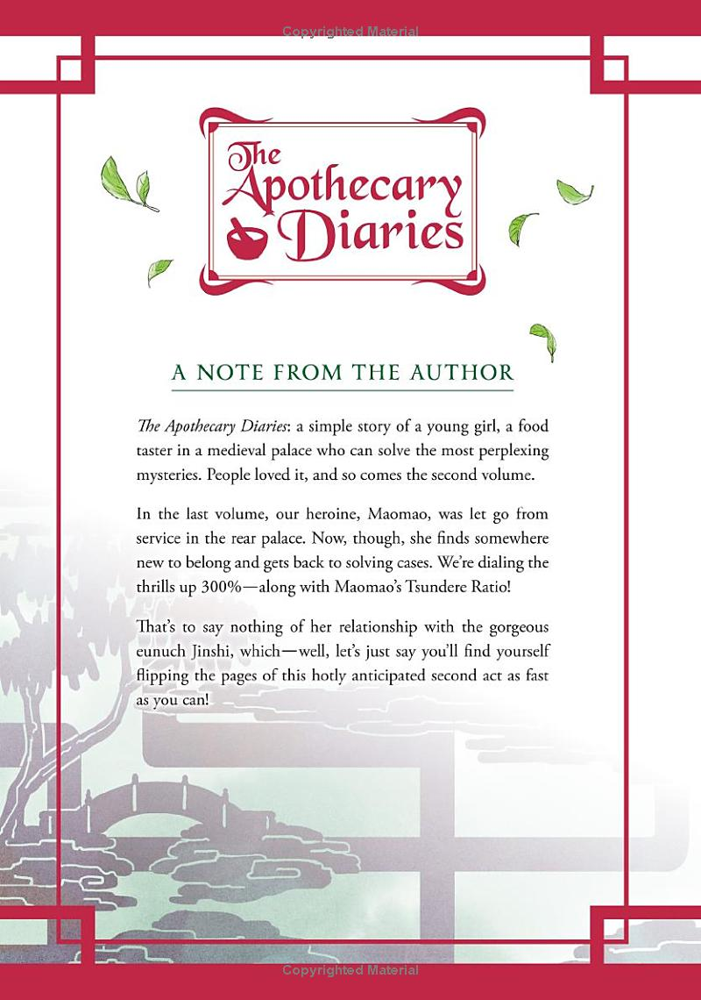
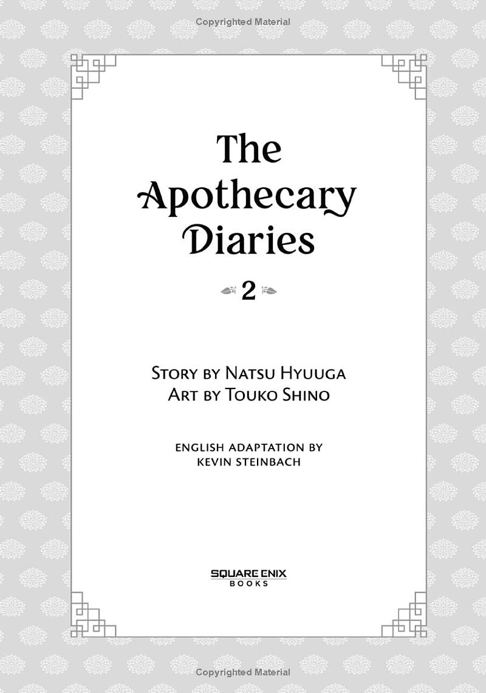
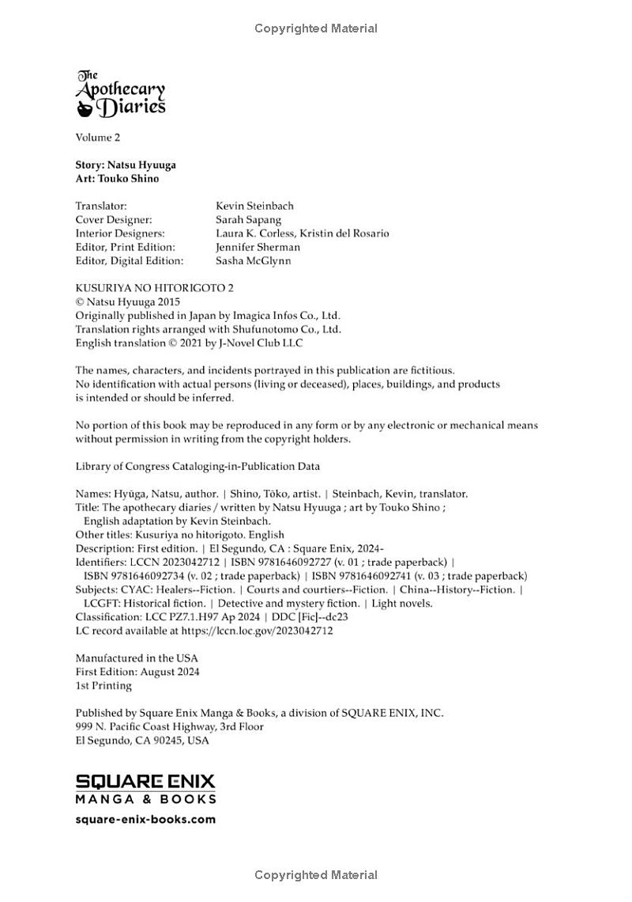

Apothecary Diaries
by Natsu Hyuuga, Touko Shino
| August 6, 2024
$25.99

Summary
A palace servant trained in herbal medicine finds herself in the heart of imperial intrigue in this enthralling period mystery!
Dismissed from the rear palace, Maomao returns to service in the outer court—as the personal serving woman to none other than Jinshi! That doesn't necessarily make her popular with the other ladies, but a bit of jealousy might be the least of her problems. A mysterious warehouse fire, an official with a very bad case of food poisoning, and the mysterious last will and testament of a deceased craftsman all demand her attention—but are these cases really separate, or do they share a troubling connection? Then there's the mysterious military man who continually visits Jinshi. He's strange, maybe even a little twisted...and he seems very interested in Maomao.